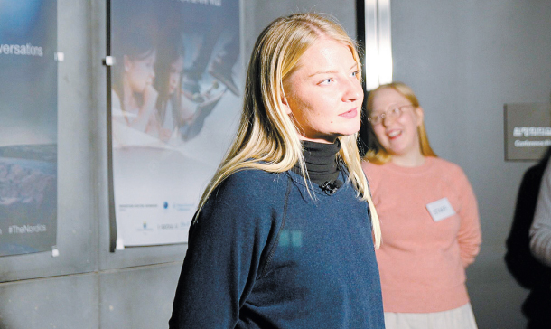

A group of Nordic countries celebrated 60 years of diplomatic relations with Korea by holding a series of talks on education and employment in the so-called fourth industrial revolution and the Nordic experience with innovation. “The NORDtalks is a project executed by Nordic embassies in Korea,” Ambassador of Norway to Korea Frode Solberg told an audience at the Oil Tank Culture Park, western Seoul, Jan. 31. “Three of five Nordic countries [represented in Korea] are celebrating 60 years of diplomatic relations with Korea, and while each embassy will be hosting different events, this is part of the celebration.” The three countries are Norway, Sweden and Denmark “What does it mean to be a Nordic?” asked Swedish Ambassador to Korea Jakob Hallgren. “We are 27 million people, approximately half of Korea’s population, and we are in five countries in a vast territory in northern Europe who share common values and a way of life.” The talks are a three-part series to be hosted throughout the year as an introduction to the Nordic way of life and thinking. The first was held on Jan. 31 in an auditorium at the Oil Tank Culture Park, an oil depot turned into a park. It focused on education and employment in the fourth industrial revolution. “If you read some of the headlines in the news about the future, they speak of how robots may steal as many as 800 million jobs in the next 13 years, and that robots are coming into our lives sooner than you think,” said Louise Fredbo-Nielsen, an author, as well as a futurist, whose expertise is in future studies. “So we all get a little scared if this is all we are hearing all the time. “But the thing is,” she said, “there is no data that is showing the complete picture. MIT gathered research on the future of the labor market, and as you can see in the results, no one agrees.”
A recent study by the American university showed the number of jobs created or lost due to developments in the fields of robotics and artificial intelligence (AI) all varied, sometimes in the millions, and that no study could agree on a projection. But to turn a blind eye to changes in the world is not a solution. “You have to see what is changing and decide what it is that you have to do, instead of closing your eyes to the changes,” Fredbo-Nielsen said. “The future is something that we are creating - it is not just going to happen to us.” What we can do, she said, is to concentrate on human values. “Being human is always going to be relevant - we humans are really good at being curious and having empathy, which is going to be very important in the future,” she said. “We are good at being lazy and making mistakes - and it is important that we dare to make mistakes and it is important that we allow ourselves to experiment and do something even though we don’t know what the result will be.” The audience at NORDtalks also heard from Karolina Miller, former CEO of Finnish accelerator Startup Sauna, who jumped into entrepreneurship after a career in journalism. “Entrepreneurship is not something to be learned at school - it has to be embraced through failures,” said Miller, who is now a program director of Emerge, an international tech conference in Minsk, Belarus. “My story isn’t anyhow unique - there are people like me without prior experience in start-ups joining [the sector] on a yearly basis. For many people running the organizations, your degrees, diplomas, don’t matter as much because we operate in an ever-changing world. We are much more interested in your passion and grit.” The Korea JoongAng Daily sat down with the former journalist-turned-entrepreneur to ask about her experience with start-ups in Finland and also her take on education and innovation in Korea and Finland. The following are excerpts of the interview.